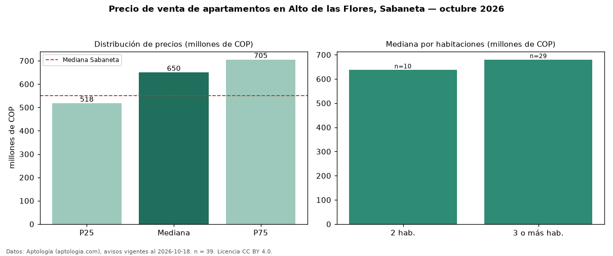

Precio de venta de apartamentos en Alto de las Flores, Sabaneta — octubre 2026
COP 650 millones es el precio mediano de apartamentos en venta en Alto de las Flores, Sabaneta (n = 39 avisos). Eso es 18 % por encima de la mediana de Sabaneta para apartamentos (COP 550 millones). Por metro cuadrado, la mediana es COP 7,82 millones/m² (n = 38 avisos con área), 10 % por encima de Sabaneta (COP 7,12 millones/m²). Por precio mediano es el puesto 2 de 30 barrios de Sabaneta con al menos 30 avisos de apartamentos en venta (COP): entre las más caras. El área mediana anunciada es 84 m². El segmento con más oferta es el de 3 o más habitaciones (29 avisos, mediana COP 680 millones); pasar de 2 habitaciones a 3 o más habitaciones cambia la mediana +7 %. La administración mediana declarada es COP 433.000 al mes (n = 19). El estrato más frecuente es 4 (72 % de los avisos con estrato). Datos: Aptología (aptologia.com), CC BY 4.0 — https://www.aptologia.com/venta/sabaneta/alto-de-las-flores. Archivos: PDF, CSV con las cifras y gráfica PNG.

| Avisos únicos | 39 |
|---|---|
| Percentil 25 | COP 517.500.000 |
| Mediana | COP 650.000.000 |
| Percentil 75 | COP 705.000.000 |
| Mediana por m² | COP 7.823.529 |
Fuente: avisos vigentes de portales inmobiliarios recopilados por Aptología, deduplicados (mínimo 30 avisos únicos por celda). Precios pedidos, no cerrados. Fecha: 2026-10-18.